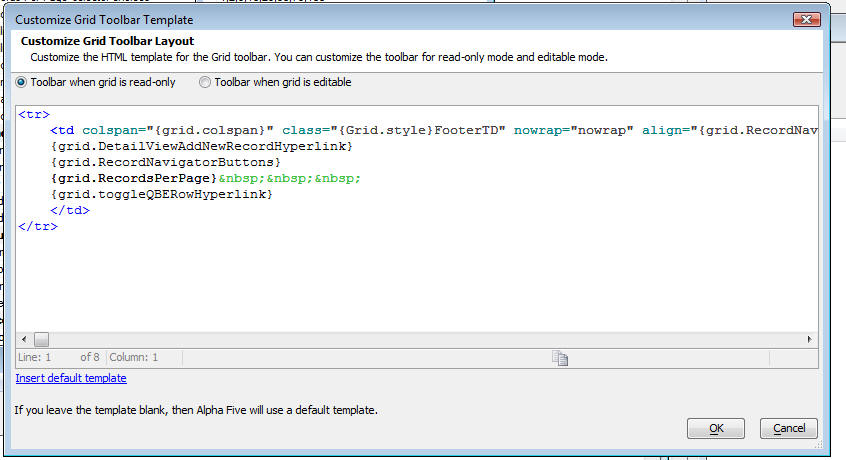
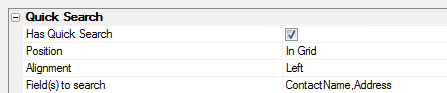

Grid Properties in Detail
- Ajax
-
Layout Options
- Class map
- Resolve abstract CSS class names
- Style name
- Style overrides for Javascript elements
- Repeating columns
- Rows of data
- Add records only
- Show Confirmation Message
- Confirmation Message Template
- Rows of data when search active
- Number of 'Layout' Columns
- Snaking style
- Suppress empty rows
- Show title
- Title
- Font size
- Has 'Records Per Page' selector
- 'Records Per Page' selector choices
- 'Records Per Page' template
- Highlight row on hover
- Highlight row on select
- Has checkbox select column
- Has row selector column
- Can collapse grid?
- Customization
- Master Template
- Shading and Dividers
- Row Labels
- Column Titles and Sorting/Scrolling Options
- Record Navigator/Grid Toolbar
- Quick Search
- Has Quick Search
- Position
- Alignment
- Field(s)to search
- Allow QBF style
- Search style
- Control type
- Has 'Clear QuickSearch' button
- Clear QuickSearch' button label
- Initial selection
- Control inline style
- Textbox size
- Textbox maximum length
- Search button label
- Quick Search label
- Quick Search label style
- Has freeform layout
- Search rules
- Linked Grids/Content
- Tree-control Record Navigator
- Alternate Views (includes Google Map and Chart)
- Action Buttons
- Group Breaks
- Multiple Named Layouts
- Row Expander
- Query by-Example Row
- 'Alphabet Buttons/Custom Buttons' Search
- Freeform Edit Regions
- Security
- Miscellaneous
- Use legacy date picker
- Date format
- Switch year
- Date picker- day names
- Date picker - first day of the week
- Date picker - month names
- Date picker - 'Close' button text
- Search highlighting
- Xbasic function declarations
- Xbasic Linked files
- Xbasic .aex files
- A5W Include files
- Additional Grid styles
- Local CSS definitions
- CSS linked files
- CSS (Font) Icons
- Language definitions
- Text dictionary tags
- Active language
- Remove un-consumed language tags
- Linked resources from child Grids
- Published session variables
- Help Table definition
- Field help window style
- Auto-refresh Grid
- Javascript - Row Events
- Javascript - System Events
- Javascript - Other
- Javascript Actions
- Advanced
|
Ajax
|
Layout Options
|
Layout Option Properties
- Class map
- Resolve abstract CSS class names
- Style name
- Style overrides for Javascript elements
- Repeating columns
- Snaking style
- Rows of data
- Add records only
- Show Confirmation Message
- Confirmation Message Template
- Rows of data when search active
- Number of 'Layout' Columns
- Suppress empty rows
- Show title
- Title
- Font size
- Has 'Records Per Page' selector
- 'Records Per Page' selector choices
- 'Records Per Page' template
- Highlight row on hover
- Highlight row on select
- Has checkbox select column
- Has row selector column
- Vertical alignment of controls in columns
- Can collapse grid?
Class map
Loads the Class Map Overrides Dialog. Allows you to override the way in which any of the Abstract CSS Class Names are mapped to Physical Class Names. When the Component is designed, all of the HTML controls in the component use Abstract CSS Class Names (e.g. [class.gridPartInput]). When the Component is run, the Absrtact CSS Class Names are converted to Physical CSS Class Names (e.g GlassBlueInput). The Class Map is used to convert Abstract CSS Class Names to Physical Class Names
Resolve abstract CSS class names
|
Style name
|


The MobBlue style for use with Mobile devices

GrOlive Style
Style overrides for Javascript elements
|
Repeating columns
|

Three Repeating Columns on a Form (Columnar) Grid
Three Repeating Columns in a Stacked Columnar Grid
|
Repeating columns |
tmpl.RepeatingColumns as N |
Snaking style
|
|
Snaking style |
tmpl.snaking as C |
"TBLR" Snaking Style with 2 Repeating Columns (5 records)
"LRTB" Snaking Style with 4 Repeating columns (5 Records)
Rows of data
|

10 Rows of data on a Tabular grid
|
Rows of data |
tmpl.rows as N |
Add records only
|

Users Enter Information Only
Show Confirmation Message
|
Confirmation Message Template
|

{RecordCount} counts the number of records submitted.
Rows of data when search active
|
Number of 'Layout' Columns
|
Using the Layout Columns Feature:
1. Open the Grid Builder from the Web Projects Control Panel. Open the Design tab go to the Component Type page.
2. Select Form(Columnar) from the Grid Layout menu, you could also select Stacked Columnar.
3. Open the Data Source page and select either .dbf or SQL for your type of data.
4. On the Query(DBF) or Query(AlphaDAO) page create a connection to the table you want to use to retrieve data from. This uses the Alphasports Customers table.
5. Go to the Fields page and move ten or so fields from the Available Fields: list into the Selected fields list.
6. Go to the Properties page on the Grid Builder's Design tab. Find the 'Layout Options' properties.
7. Under the Layout Options section find the Number of "Layout" Columns property. By default it should be set to 1.
8. Run your grid on the Working Preview tab and view the result.
Number of Layout Columns property set to 1

Number of Layout Columns property set to 2
Number of Layout Columns property set to 3
|
|
Number of "Layout" columns |
tmpl.LayoutColumns as N |
|
Using Row Spacers for Control Positioning:
1. From the Web Projects Control Panel open the Grid Builder. Once on the Design tab go to the Component Type page.
2. Select Form(Columnar) from the Grid Layout menu, you could also select Stacked Columnar.
3. Open the Data Source page and select either .dbf or SQL for your type of data.
4. On the Query(DBF) or Query(AlphaDAO) page create a connection to the table you want to use to retrieve data from. Like the previous example, this one also uses the Customers table.
5. Go to the Fields page and move ten fields from the Available Fields: list into the Selected fields list.
6. Click on the Properties page to open it. In the Properties list locate the 'Layout Options' properties.
7. Under the Layout Options section find the Number of "Layout" Columns property and enter a '4' in the input box. In Working Preview your grid records should look something like this:
8. Now go to the Grid Builder's grid Fields page. Click on the first field in your Selected fields list. In the Field Properties list on the right scroll down to Row Properties.
9. Under Row Properties find the Column span property and set it to 2.
10. Now change the Column span property for the 2nd, 3rd, and 4th fields in your Selected fields list to 2.
11. Click on the 5th field in your Selected fields list and change its Column span property to 4. Your grid should look something like this:
|
12. On the Design tab's Fields page, highlight the 2nd field in your Selected fields list. Next click the Insert... link underneath the Available fields list.
13. The Insert Special Control dialog will open. Click on the [Row Spacer] control and click OK.
14. Highlight the 4th field in your Seleted fields list and add another [Row Spacer] underneath it. The result should look something like this...
A Form Columnar grid with Row Spacers
Suppress empty rows
|
Show title
|
|
Show title |
tmpl.show_title as L |
Title
|

Changing HTML in the Title property
|
Title |
tmpl.title as C |
Font size
|

|
Font size |
tmpl.FontSize as C |
Has 'Records Per Page' selector
|

Records per Page Selector
'Records Per Page' selector choices
|

Set row choices
'Records Per Page' template
|
Highlight row on hover
|

A row where the cursor position is highlighted
Highlight row on select
|
Has checkbox select column
|


Checkboxes added to rows

Checkbox Bubble Help
Has row selector column
|
Row selector column
Can collapse grid?
|

Title bar with grid collapsed
Title bar with grid open.
Customization
|
Customization Properties
'No records found' message
|

Default 'No records in query' message
Modified 'No records found' message
|
"No Records found" message |
tmpl.no_records_message as C |
'Total records' message text
|
Default 'Total records' message text
Modified 'Total records' message text
|
"Total records" message text |
tmpl.total_records_row as C |
'Total records' message position
Specify the position of the text showing the number of records in the current query.
|
"Total records" message position |
Default = "Above Grid". Specifies the position of the text showing the number of records in the current query. The options are:
tmpl.total_records_row_position as N |
Display title before existing records
Display a title before the first record.
|
Display title before existing records |
Enables the display of the existing records title. tmpl.HasExistingRecordsTitle as L |
Existing records title
|

|
Existing records title |
tmpl.ExistingRecordsTitle as C |
Display title before new records
|
Display title before new records |
Enables the display of the new records title. tmpl.HasNewRecordsTitle as L |
New records title
|
New records title |
A title that appears after existing data in the grid, but above the rows used to enter new records. This only works if the grid is updateable tmpl.NewRecordsTitle as C |
Table tag inline style
Specify the inline style for the Grid's
|
Category |
Options and Description |
|
Row separator HTML |
HTML code that customizes the grid's row or column separator. tmpl.row_separator as C |
Javascript windows
|
Customizable Javascript Window Properties
|
Default UndoEditsConfirmation Javascript Window
Customized UndoEditsConfirmation
Customize icons
|
The Define Grid Icons Dialog
|
|
Customize a Grid Icon:
1. Create two simple icons using whatever paint or photoshop program works for you. These icons were created as 24 x 24 pixel png files.

duck icon
duck nest icon
2. From the Web Projects Control Panel open the Grid builder. On the Design tab's Component Type page under Grid Layout: menu select a Tabular grid.
3. On the Data Source page choose the type of data you want to display your grid. This example uses SQL.
4. Under Query(DBF) or Query(AlphaDAO), select the table that you want to draw data from.
5. Go to Fields and add a number of fields to your grid by moving them from the Available Fields list to the Selected fields list.
6. Go back to the Query page. Find the Select Primary Key button and click it. A primary key is what you use identify records uniquely. It must be one of the fields defined in your grid; preferably one with differing entries.
7. The Select Primary Keys dialog will open. From the fields listed, check one that appears in your grid and click OK.
9. Now go to the Properties page. Scroll down to the Row Expander properties section and check the Has row expander property.
10. A list of Row expander properties will open. Find the
Row Expander linked
content property and click the button
 next to it.
next to it.
11. The Define Linked Content Dialog will open. Click the Add Object button and from the drop-down select Add Linked Component.
12. This will bring you to the Select Component Dialog, which will show you all of the components that you have created. Select a component from the list and click OK.
13. Click OK again to close the Define Linked Content dialog and scroll up the Properties page until you find the Customization properties section.
14. Find the Customize icons property and
click the button
 next to it.
next to it.
15. The Define Grid Icons dialog will open.
In the list of icons find the images.RowExpander.Open
Placeholder and click the button
 next to it.
next to it.
16. The Specify image dialog will open. Click the Image in Web Project or Style radio button and then hit the Select button and choose the Select from Web Project Folder option.
17. A Select Image dialog will open. Click the Add Image to Project button.
18. The Add Image to Project dialog will appear. Click the 'up' button next to Source filename: and navigate to where you stored your first simple icon on you computer.
19. Click OK, OK, and OK again to get back to the Define Grid Icons page. The altered icon should appear in bold lettering.
20. Next Select the images.RowExpander.Close
Placeholder and click the button
 next to it.
next to it.
21. Repeat steps 17 through 19 for this placeholder only this time add a different icon in step 18. Your Define Grid Icons dialog should look something like this.
22. Click OK and go to Working Preview or Live Preview. You should now see your new Row Expander icon. Click on it and you should see it change to the second icon you defined.
New Row Expander Closed 'Duck' Icon
New Row Expander Open 'Nest' Icon
Master Template
|
Use a master layout template
|
Master Layout Template Style
|

Tab Container - Tabs on top.

Tab Container - Tabs on Bottom with grid pane open
Tab Container - Tabs on Left with Detail open
Accordion Container with Detail Open
Search pane Label
|
Search pane Label
Modified Search pane Label
Grid pane Label
|
Grid pane label
Detail View Label
|

Detail pane label
Modified detail pane label
Accordion Style
|

Multiple accordion panes open at once
Initial open Panes
|
Alpha Anywhere Feature Peek #23: Master templates
Shading and Dividers
|
Shading and Divider Properties
- Alternate Row Shading
- Alternate Column Shading
- Row Separator
- Conditional Style (Server-Side)
- Conditional Style (Client-Side)
Alternate Row Shading
|

Even row band size 1, Odd row band size 1
Even row band size 2, Odd row band size 1
|
Alternate row shading |
tmpl.alternate_bands as L |
|
Even row band size |
tmpl.even_band_size as N |
|
Odd row band size |
tmpl.odd_band_size as N |
Alternate Column Shading
|


Even column band size 1, Odd column band size 1
|
Alternate column shading |
tmpl.alternate_column_bands as L |
|
Even column band size |
tmpl.even_column_band_size as N |
|
Odd column band size |
tmpl.odd_column_band_size as N |
Row Separator
|
Grid with Row separator Off
Grid with Row separator turned On
|
Row separator |
tmpl.has_row_separator as L |
Conditional Style (Server-Side)
Conditional Style (Server-Side)
Grid Components - Server Side - Dynamic Image, Conditional Field Style and
Conditional Row Style

Conditional Style (Client-Side)
Row Labels
|
|
Show row labels
|
With Row Labels
Without Row Labels
Suppress repeated row labels
|
Without Suppress Repeat

With Suppress Repeat.
Column Titles and Sorting/Scrolling Options
|
|
- Column titles position
- Suppress titles if no records
- Sorting style
- Reset page number on sort
- Grid body can scroll
- Fixed column widths
Column titles position
|

Above Grid
Below Grid

Above and Below Grid
No Titles
|
Column titles position |
tmpl.show_column_titles as N |
Suppress titles if no records
|
|
Sorting style
|
|
|
Sorting style |
Specifies the sorting style of the columns. The options are:
tmpl.sort_style as N |
Reset page number on sort
|
|
|
Reset page number on sort |
Specifies whether to display page 1 when sorting records. tmpl.reset_page_number_when_sorting as L |
Grid body can scroll
|
Scrollbar
Fixed column widths
|
Fixed Column Widths - Definition Dialog
|
Record Navigator/Grid Toolbar
|
- Record navigator style
- Record navigator position
- Suppress record navigator bar/footer if no records
- Record navigator layout
- Suppress footer if only one page
- Export to Excel/Ascii
- Help window
- Toolbar 'Action Buttons'
- Customize Grid toolbar template
Record navigator style
|

NavigationButtons
FetchMoreRecordsButton
PullUpTouchEvent
Record navigator position
|
Below Grid

Above Grid
Above and Below Grid

No Navigation Bar
|
Record navigator position |
tmpl.RecNav.Page_Numbering_Style as N |
Suppress record navigator bar/footer if no records
Record navigator layout
|
Add a Pre-Defined Page Navigator:
Make sure that No Navigation Bar is NOT selected in the Record Navigator position property.


|
Create a User Type-in Box for Page Navigation:
1. Open the Design tab in the Grid Builder.
2. Go to the Grid Properties page. Scroll down to the Record Navigator/Grid Toolbar properties

3. View the result in Working Preview.
Type-in box for page navigation
|

Create a Custom Layout:
1. Open the Grid Builder from the Web Projects Control Panel and go to the Design tab.
2. Under Data Source choose either .dbf or SQL.
3. Go to the Query(DBF) or Query(AlphaDAO) page and select a table from which to draw data.
4. Next assign some fields to the grid you are creating. Open the Fields page and use the arrows to fields from the Available Fields: list into the Selected fields list.
5. Make your way to the Properties page and scroll down the list of properties until you find the Record Navigator/Grid Toolbar section.
6. Under Record Navigator style select NavigationButtons.
7. Find the Record Navigator Position property and select Above Grid, Below Grid, or Above and Below Grid. Do not select the No Navigation Bar option.
8. Click the button
 next to the Record Navigator layout property to
open the Record Navigator Designer.
next to the Record Navigator layout property to
open the Record Navigator Designer.
9. In the Pre-Defined Format region select Custom layout. The Customize region of the dialog should quickly populate with tools.
|
Record navigator layout |
tmpl .RecNav.Page_Numbering_Style as N .PagesTemplate_wout_PageCount as C .Show_Page_Count as L |
Suppress footer if only one page
|
Suppress if only one page |
Determines whether to show the navigator if there is only one page. tmpl.RecNav.SuppressIfOnlyOnePage as L |
Export to Excel/Ascii
Help window
Toolbar 'Action Buttons'
Customize Grid toolbar template
Customize the Grid Toolbar
The Grid has always allowed you to customize the layout of the record navigator, but now, you can customize the entire Grid Toolbar and you can add your own custom buttons to perform actions that you define.
For example, this image shows how we have added 3 custom buttons to the toolbar.

To customize the toolbar, click the smart field for the 'Customize Grid toolbar template' property.

The Genie lets you customize the toolbar for when the Grid is read-only and when it is editable. You can make modifications to the HTML template. The placeholders in curly brackets are used for the different parts of the toolbar.
To get started, click the hyperlink to insert the default template.

To add a button to the template you would have to do
foo() would be a javascript function defined in javascript function declarations.
However, this is a manual technique that is obsolete as of October 2010, because Action Buttons gives you this facility and much more.
See video 86
86

|
Category |
Options and Description |
|
First Record Label |
Defines the text that appears for the first record label. tmpl.RecNav.First_Label as C |
|
Next Record Label |
Defines the text that appears for the next record label. tmpl.RecNav.Next_Label as C |
|
Previous Record Label |
Defines the text that appears for the previous record label. tmpl.RecNav.Prev_Label as C |
|
Last Record Label |
Defines the text that appears for the last record label. tmpl.RecNav.Last_Label as C |
|
Show First Record Image |
Determines whether an image replaces the first record label. tmpl.RecNav.Has_First_Button as L |
|
Show Next Record Image |
Determines whether an image replaces the next record label. tmpl.RecNav.Has_Next_Button as L |
|
Show Previous Record Image |
Determines whether an image replaces the previous record label. tmpl.RecNav.Has_Previous_Button as L |
|
Show Last Record Image |
Determines whether an image replaces the last record label. tmpl.RecNav.Has_Last_Button as L |

The Webform Style Builder changed the column headings and background colors of the grid's stylesheet. The Webform Button Genie modified the navigation buttons, which are now located both above and below the grid.
Quick Search
|
- Has Quick Search
- Position
- Alignment
- Field(s)to search
- Allow QBF style
- Search style
- Control type
- Has 'Clear QuickSearch' button
- Clear QuickSearch' button label
- Initial selection
- Control inline style
- Textbox size
- Textbox maximum length
- Search button label
- Quick Search label
- Quick Search label style
- Has freeform layout
- Search rules
Has Quick Search
|
|
Has Quick Search |
tmpl.HasQuickSearch as L |
Position
|
In Grid

Above Grid
|
Position |
tmpl.QuickSearch .QuickSearchPosition as C |
Alignment
|

Align Left

Align Center

Align Right
|
Alignment |
tmpl.QuickSearch .QuickSearchAlign as C |
Field(s)to search
|
Add Fields to a Quick Search:
1. Open the Grid Builder from the Web Projects Control Panel and go to the Design tab.
2. Under Data Source choose either .dbf or SQL.
3. Go to the Query(DBF) or Query(AlphaDAO) page and select a table from which to draw data.
4. Next assign some fields to the grid you are creating. Open the Fields page and use the arrows to move fields from the Available Fields: list into the Selected fields list.
5. In the Properties page, scroll down the list of properties until you find the Quick search section. Check the Has Quick Search checkbox.

6. Find the
Field(s) to search property and click the
button
 next to it.
next to it.
7. The Select Field(s) to Search dialog will open. If you want to include only one field, click Search in a single field radio button and select the field from the Field to search drop-down.
8. To include multiple fields in a Quick Search, check the Search multiple fields radio button. Then check off all off the checkboxes next to the fields you want in the Specify which fields to search list.
9. Click OK to add the fields and close the Select Field(s) dialog.
|
Fields(s) to search |
tmpl.QuickSearch .FieldToSearch as C |
Allow QBF style
|
Allow QBF style |
Enables QBF style. QBF style causes the search argument "A,B,C" to search for A, B, or C. The search argument "A..C" searches for entries between A and C. The search argument "C.." searches for entries greater or equal to C. 'The search argument "..C" searches for entries less than or equal to C. tmpl.QuickSearch .AllowQBFStyleSearch as L |
Search style
|
Search style |
Specifies how the data should be searched. The options are:
tmpl.QuickSearch .SearchStyle as C |
Control type
|
Add a Static Quick Search Dropdownbox Control:
1. From the Web Projects Control Panel open the Grid Builder, go to the Design tab, and under Data Source choose either .dbf or SQL.
3. On the Query(DBF) or Query(AlphaDAO) page and select a table from which to draw data.
4. Open the Fields page and use the arrows to add fields from the Available Fields: list to the Selected fields list.
5. In the Properties page, scroll down the list of properties until you find the Quick search section. Check the Has Quick Search checkbox.
6. Go to the Field(s) to Search property and select some fields for your Quick Search control to search.
7. Find the Control type property and from the dropdown select the 'Dropdownbox' control.
8. Find the Choices property, directly below
the Control type property, and click the button
 next to 'Choices'.
next to 'Choices'.
9. The Define Choices for 'QuickSearch' (Dropdownbox) dialog will open. Leave the List Type drop-down set to Static. Click the button next to the Choices option.

10. The Specify Choices dialog will open. Enter the list of static choices you want the user to see. You can sort the list alphabetically using the 'Sort Ascending' or 'Sort Descending' buttons.
11 Click OK to save and close the Specify choices dialog. Click OK again to close the Define Choices for 'QuickSearch' (Dropdownbox) dialog.
12. Run your grid in Live Preview or Working Preview mode and see how the control looks.

A Static Drop-down Quick Search control
Result after clicking the Search button
Add a Dynamic Quick Search Dropdown control:
|
Control type |
tmpl.QuickSearch .ControlType as C |
Has 'Clear QuickSearch' button
Clear QuickSearch' button label
Initial selection
|
Initial selection |
Specifies the initial selection in the Quick Search. Leave this property blank if all records should be shown when the Grid is initially displayed. For example, say that your Quick Search does searches on a State field, and when the Grid is displayed initially, you want to show records for "MA". tmpl.QuickSearch .InitialSelection as C |
Control inline style
|
Control inline style |
Overrides the style for
the Quick Search control. Click tmpl.QuickSearch .Check box.InLineStyle as C .Dropdownbox.InLineStyle as C .Radiobutton.InLineStyle as C .Textbox.InLineStyle as C |
Textbox size
|
Textbox size |
Only applies if the Control type property is set to "TextBox". Sets the width of the textbox control. tmpl.QuickSearch .Textbox.Size as N |
Textbox maximum length
|
Textbox maximum length |
Only applies if the Control type property is set to "TextBox". Sets the maximum width of the text that can be entered into a textbox control. Set to -1 for no limit. tmpl.QuickSearch .Textbox.MaxLength as N |
Search button label
|
Search button label |
Specifies the label for the Search button. Applies only if the Auto Submit property is set to False. This is the button that the user clicks to perform the Quick Search. tmpl.QuickSearch .SearchButtonLabel as C |
Quick Search label
|
Quick Search label |
Specify the label for the Quick Search. This label appears to the left of the Quick Search control. tmpl.QuickSearch .Label as C |
Quick Search label style
|
Quick Search label style |
Overrides the style for
the Quick Search lable. Click tmpl.QuickSearch .labelInLineStyle as C |
Has freeform layout
|
Has freeform layout |
Specifies if the Quick Search has a freeform layout. This will allow you to specify any HTML for the text that surrounds the Quick Search. tmpl.QuickSearch .HasfreeFormLayout as L |
Search rules
The Quick Search (V7) feature is an alternative to putting a Search Part on a Grid. It takes up less real estate than the Search Part, but does not have all of its options. There are some features, however that exceed the capabilities of a Search Part. In particular, you can auto-submit the search when a value in a dropdownbox, radio button or check box control changes. For example, you might have a Quick Search on a State field. You would have a dropdownbox showing all states. When the user makes a new selection in this dropdownbox, a new search runs immediately, without the user having to click a Search button.
Refer to Defining a Quick Search for instructions.
NOTE : If you include a Search Part in addition to a Quick Search, then the Search Part will perform searches within the subset of records selected by the Quick Search.
|
Category |
Options and Description |
|
Choices |
The choices property is available if the Control type is "Dropdownbox", "RadioButton", or "Check box". Refer to Defining Choices for Check Boxes, Radio Buttons, and Drop Down Lists. tmpl.QuickSearch .Check box.Choices as C .Dropdownbox.Choices as C .Radiobutton.Choices as C |
|
Has ShowAll radio button |
Only applies if the Control type property is set to "Radiobutton". Specifies if the radio buttons should include a button to show all records. This is necessary to "turn off" the search after you have done a quick search. With other control types, you can turn off the search by doing a search on a blank value. tmpl.QuickSearch .Radiobutton.HasShowAllButton as L |
|
ShowAll button label |
Only applies if the Control type property is set to "Radiobutton". Defines the label for the "ShowAll" radio button. tmpl.QuickSearch .Radiobutton.HasShowAllButton as L |
|
Dropdownbox height |
Only applies if the Control type property is set to "DropDownBox". Specifies the height of the dropdownbox. If the height is greater than 1, you can allow the user to select multiple entries. tmpl.QuickSearch .Dropdownbox.Size as N |
|
Dropdownbox select style |
Only applies if the Control type property is set to "DropDownBox". Specifies if the user can select multiple entries, or just a single entry. The choices are:
tmpl.QuickSearch .Dropdownbox.SelectStyle as C |
|
Orientation |
Only applies if the Control type property is set to "Radiobutton" or "Check box". Specifies the orientation of the Quick Search control. The options are:
tmpl.QuickSearch .Check box.Orientation as C .RadioButton.Orientation as C |
|
Auto submit |
Only applies if the Control type property is not set to "TextBox". Specifies whether, when the user makes a selection in the Quick Search, the search be performed immediately or when the user clicks the "Search" button? tmpl.QuickSearch .AutoSubmit as L |
|
Freeform layout |
Applies only if the Has freeform layout property is set to True. Specifies the freeform layout for the Quick Search. You can specify any HTML for the text that surrounds the Quick Search. tmpl.QuickSearch .freeFormLayout as C |

A grid with Quick Search. This search has a predefined set of search values that are implemented with radio buttons.
Defining a Quick Search
|

A Quick Search control.
Procedure:
-
Display the Grid > Properties page.
Scroll down to the Quick Search heading in the properties menu.
-
Select the Quick Search > Has Quick Search check box.
Make a selection in the Quick Search > Position list. The control may be:
"Above Grid"
-
"In Grid"
-
If you selected "In Grid" in step 4, select the alignment of the search control in the Quick Search > Alignment list. The options are:
-
"Left"
-
"Center"
-
"Right"
-
Click
 in the Quick Search > Field(s) to search
field to display the Select Fields(s) to Search
dialog. If you select more than one field then the program will search
in all of the specified fields. For example, if you specify Firstname,
Lastname, Company in this property, and then search on 'John', Alpha Anywhere
will search for 'John' in all three fields. Records containing 'John'
in any of these fields will be returned.
in the Quick Search > Field(s) to search
field to display the Select Fields(s) to Search
dialog. If you select more than one field then the program will search
in all of the specified fields. For example, if you specify Firstname,
Lastname, Company in this property, and then search on 'John', Alpha Anywhere
will search for 'John' in all three fields. Records containing 'John'
in any of these fields will be returned. - Select whether you want to Search in a single field or Search multiple fields.
- If you selected to search in a single field, select it from the list and click OK.
- If you selected to search in multiple fields, place checkmarks next to the selected field names and click OK.
-
Optionally, select Quick Search > Allow QBF style to indicate whether QBF style searches be allowed. With QBF style searches, "A,B,C" searches for "A", "B", or "C". "A..C" searches for entries between "A" and "C". "C.." searches for entries greater or equal to "C". "..C" searches for entries less than or equal to "C".
-
Optionally, choose a search style in the Quick Search > Search style list. The options are:
-
"Wildcard" - search for an exact match, ignoring case and length (wildcard characters * and ? are allowed).
-
"Exact" - search for an exact match, ignoring case and length.
-
"Contains" - search for value anywhere in field (no need to use wildcards in search string).
-
"Starts with" - search for value at the beginning of field (no need to use wildcards in search string).
-
Select the control type in the Quick Search > Control type list. The options are:
-
"Textbox"
-
"Dropdownbox"
-
"RadioButton"
-
"Check box"
-
If you selected "Dropdownbox", "RadioButton", or "Check box" in step 9:
-
Click
in the Quick Search > Choices
field to specify the choices to show in the control.
- In the Quick Search > Maximum number of choices field specify the maximum number of choices to show. Set to 0 for no limit. This option is only meaningful if the control is populated dynamically from a database and you don't know how many records the query that populates the control will return. For example, a page that showed 50 choices for a check box control would be unwieldy, and you would want to limit the number of choices shown.
-
Optionally, select Quick Search > Has 'ShowAll' radio button. This is only applies if the control type property is set to "Radiobutton". Specify if the radio buttons should include a button to show all records. This is necessary to turn off the search after you have done a quick search. With other control types, you can turn off the search by doing a search on a blank value.
-
If you enable the Quick Search > Has 'ShowAll' radio button, specify the ShowAll button label.
-
Optionally, specify the initial selection in the Quick Search > Initial selection field. Leave this field blank if all records should be shown when the Grid is initially displayed. If you specify a value, then when the Grid is initially displayed it will be appropriately filtered (according to the search query). For example, say that your Quick Search does searches on a State field, and when the Grid is displayed initially, you want to show records for "MA".
-
Optionally, click
in the Quick Search > Control inline
style field to specify the inline style for the Quick Search control. -
If you selected "Dropdownbox" in step 9, specify the Quick Search > Dropdownbox height. If the height is greater than 1, you can allow the user to select multiple entries.
-
If you selected a value greater than 1 in step 15, choose the Quick Search > Dropdownbox select style. Specify if the user can select multiple entries, or just a single entry.
-
If you selected "Textbox" in step 9:
- Specify the width of control in the Quick Search > Textbox size field.
- Specify the maximum number of characters that the user can enter into the Quick Search > Textbox maximum length field. Set to -1 for no limit.
-
If you selected "RadioButton" or "Check box" in step 9, specify the orientation of the Quick Search control in the Quick Search > Orientation field. The options are:
-
"Horizontal"
-
"Vertical"
-
If you selected "Dropdownbox", "RadioButton", or "Check box" in step 9, in the Quick Search > Auto submit field specify whether the search should be performed immediately, or only when the user clicks the Search button.
-
If auto submit in step 19 is not selected, specify the label for the Search button in the Quick Search > Search button label field. This is This is the button that the user clicks to perform the Quick Search.
-
Specify the Quick Search > Quick Search label. This is the text that appears to the left of (or above) the search control.
-
Optionally, click
to specify the Quick Search > Quick
Search label style. -
Optionally, select Quick Search > Has freeform layout. This will allow you to specify any HTML for the text that surrounds the Quick Search.
Freeform layout. -
If you want a freeform layout for the Quick Search, in the Quick Search > freeform layout field click
to display the
Freeform Column Layout dialog. You can specify any
HTML for the text that surrounds the Quick Search.
Examples
The following example shows a text Quick Search field embedded in the grid. In this case the Quick Search field has been defined as a combo box showing unique values from the Sales Rep table field.
In the following example the search field shows unique values from the Payment field as radio button selections. The current selection is "MasterCard", which was set to correspond to a value of "MCard" in the table. In this case the Quick Search field is outside the grid component.
See Also
Creating a Grid Component, Setting Grid Properties
Linked Grids/Content
|
Has linked Grids or other content
Linked Content Definition
You can have as many linked content sections as you want can place them in a freeform edit region anywhere in the grid, it doesn't matter, completely up to your control

add arbitrary name - ex PRIMARY can have as many of these as you want

click define linked content

click Add Object

first grid you want to link would be order
click OK
Click Parent field and then customer ID field
Click add grid
add customersbycountry grid
link its parent field to the country field
Set initial Grid to display to 1. This will be the first grid to appear
Choose whether you want to display the grid as a tab control or an accordion control.
Choose your tab location, if you have a tab control - top, bottom, left or right.
Click edit freeform edit regions button to place the content on the component. Select bottom to put it underneath the grid
add a break to put some space between the linked grid and the grid part. then click on the Available placeholder for the linked grid you created.
Run it
The image below shows a Customer grid. The last cell in the Grid contains an embedded, linked Grid showing the orders for that customer.
The embedded Grids are rendered by making subsequent Ajax callbacks after the parent Grid has rendered. This means that the embedded Grids do not slow down the initial rendering of the parent Grid.

Grid - Linked Content Section and Row Expanders
Cosmetic Change in how the Child Grid is Rendered
If there is only a single child grid, the child grid is no longer enclosed in a container with a border. The images below show the impact of the change.Grid with Linked Content - Notice that Linked Content Section is no longer wrapped in a container with a border and background fill.
Linked Content Sections
Linked Content Sections allow you to display linked data in your Grid.
The linked content is displayed in a Tab or Accordion control if the Linked Content Section links more than one object. Linked Content Sections essentially duplicate the functionality of the Tabbed Grid Linker component and the Grid Linker component (from V9 and prior version). But because Linked Content Sections use Ajax, they don't have the performance penalty that Tabbed Grid Linkers and Grid Linkers have. You can place as many Linked Content Sections on your Grid as you want. For example, you might have a Customer Grid with a Linked Content Section below the Grid that displays an Orders Grid (showing orders for the selected Customer) and a Payments Grid (showing payments received from the selected Customer). These two Grids would be displayed in a Tab or Accordion control. Then, you might have another Grid (displayed, say, to the right of the Customer Grid) showing a list of all documents/letters/proposals, etc. that have been sent to the selected customer. NOTE: At present, you can only place Grids in Linked Content Sections. We will add .a5w pages and other web pages in the future.
The image below shows the Customer Grid with a Linked Content Section showing the Orders Grid. This Grid, in-turn, has its own Linked Content Section which shows the Order Details Grid.
How to Place Linked Content In the Grid
To place Lined Content into the Grid, check the 'Has linked Grids or other content' checkbox and then click on the smart field. The following dialog is displayed.
You can add add many Linked Content sections as you want.

Click the 'Add Linked Content Section' button and give the section any arbitrary name that you want.

Then, click the 'Define Linked Content' button to define the linked content.

After you have defined the linked content, you must then specify where on the Grid the linked content should appear. You do this by placing a special placeholder in one of the Grid's freeform edit regions.
To place the linked content, click the 'Edit Freeform Edit Region' button and select which freeform edit region you want to use.
Then, insert the placeholder into the freeform html.

Release notes
Grid Component - Linked Content Sections - Master Template - You can now place Linked Content Sections in the Master Template. Previously, Linked Content Sections could only be placed in a Free-form edit region. The benefit of placing Linked Content Sections in the Master Template is that you get smoother repainting of the Linked Content when the parent Grid is navigated, searched, or sorted.
Limitations
HTML Memo Editor - Linked Content Section - Important Limitation - If you are displaying a Grid component in a Linked Content Section, and if the child Grid contains a pop-up HTML memo editor, the Linked Content Grid must be placed in the Master Template or a Search Part free-form edit region. The HTML editor will not function correctly if the Linked Content is placed in the Grid part's or Detail View part's free-form edit region.
Lock linked content window
Tree-control Record Navigator
|
Tree Control Navigator - Refresh
refreshExternalTreeNavigator Method
If you have placed a Tree Control Navigator on the Grid, you can now force an Ajax callback to repopulate the Tree.The Grid Object now has a new method: .refreshExternalTreeNavigator()
For example, you could have a button on the Grid with this code:
{grid.Object}.refreshExternalTreeNavigator()Refresh Tree Button
You can now set a property in the builder to add a 'Refresh' button to the Tree Control Navigator
When the tree control renders, it will have a button under the Tree to force a refresh.
Alternate Views (includes Google Map and Chart)
|

An Alternate View
Has Alternate Views
|
Alternate Views definition
|
Main View
|
ID
|
Mode
|
Selectable Mode equals different pages
Visible Mode, everything is on the same page
View selector type
|
Buttons
Tabs
Accordion
Tab position
|
Tabs on Top
Tabs on Left

Tabs on Right
Tabs on Bottom
Label

|
Label in-line style
|
|
Show Main View
|
|
Initial view
|
Has freeform template
|
Freeform template
|
Grid part's freeform text
|
Alternate View Type
|
Selecting an Alternate View:
1. From the Web Projects Control Panel open the Grid Builder. On the Design tab open the Data Source page and choose either .dbf or SQL.
2. Under Query(DBF) or Query(AlphaDAO) choose a table to connect to that contains fields that can be applied to an alternate view.
3. On the Fields page move a number of fields from the Available fields: list into the Selected fields list. Select fields that can be used for your alternate view. For example if you are doing a map choose fields that contain records for Addresses, Cities, Latitudes, Longitudes, and/or Countries.
4. On the Properties page find the Alternate View properties and check Has Alternate View property checkbox.
5. Click the button
 next to the Alternate Views definition
property. This will open the Alternate View Builder.
At first you will see no properties
next to the Alternate Views definition
property. This will open the Alternate View Builder.
At first you will see no properties
6. On the Alternate Views tab click the Add Alternate View button.
7. The Add New Alternate View dialog will open. Click the Select button next to the Alternate View Type: box.
8. This will open the Alternate View Type dialog. Select the Alternate View you want to use and click OK.
9. You will see the Alternate View Type you selected appear in the Add New Alternate View dialog. Now type in an ID: and Label: for your Alternate View, these can be any string.

10. Click OK. Your selected Alternate View should appear in the Alternate View Builder's Alternate Views: menu. You should also now see an Alternate View Properties list.
Chart Alternate View
Custom Alternate View
|
The first step in defining the alternate view to Alpha Anywhere is to check
Has Alternate View in the grid properties.
In the Alternate View Builder, add an alternate view and select
Custom for your Alternate
View type.
Click on the Xbasic function property
The alternate view definition is a combination of one or more data expressions for collecting the data and an Xbasic function for processing the collected data.
Once you type in the name of the Xbasic function you want to use, the "Show
function prototype" link will be enabled. Click on that link and Alpha
Anywhere will generate a commented prototype function for you.
Note: It is worthwhile reading the prototype function carefully so that you can understand the flow of data in the alternate view.
Click on the "Copy to clipboard" button, close the function prototype,

click on "Open Xbasic Function Declarations",
and paste your function. You can edit your Xbasic function to generate the required HTML and JavaScript for your view.
It's a good idea to create sample data and a sample function call that you can use to test your function. When your function is working properly, you can comment out the sample data and sample function call.
You'll also have to create one or more data expressions.
The help screen shown below explains what is necessary. You can create data expressions, templates that include data expressions in curly brackets, and/or Xbasic functions to process the data for each row.
Data>Explain more about...
Custom Alternate View Data.
When the Grid is rendered, Alpha Anywhere performs these steps:
-Execute a query to find records that satisfy the search criteria.
-Navigate to the correct starting record in the query (for example, if the Grid is showing 20 records per page, and you navigate to page 3, the starting record will be record number 41).
-Loop over the records in query, generating the HTML to show the Grid (This is called the 'Main Loop').
-The loop continues until you have generated the desired number of rows (based in the 'Rows per page' property), or you reach the last record in the query.
While the Main Loop is executing, you can capture additional information from each record in the query.
The way in which you specify what additional information you want to capture is by specifying one or more expressions that should be evaluated in the Main Loop.
The expressions are evaluated, and the expression results are placed into arrays (called 'value arrays'). There will be one value array for each expression that you specify. Each value array will have one entry for each row that is displayed in the Grid. So, for example, if the Grid is set to display 20 rows per page, each array will have 20 entries.
Once the Main Loop has completed, the Xbasic function that you specified for the Alternate View is called and the value arrays are passed into the Xbasic function. The Xbasic function can then use the data in the value arrays to compute the HTML to display in the Alternate View.
When you specify the expressions that you want to evaluate, you can define two types of expressions:
- Regular Xbasic expressions. Use this syntax to reference a field value in the query: tbl.data("fieldname")
- Templates. The template is a text string that can include Xbasic expressions. For example:
Function. Specify the name of an Xbasic function that will return the value you want to capture. The function prototype will be: YourFunctionName (e)
-------------------------------------------------------------------------------------------------------
custom alternate view definition > Add expression > Help on how to specify
exp.
Alternate View expressions are written in Xbasic. Your expression
will typically need to reference field values from the Grid query. To
reference a field value in the current Grid query, i.e. data from the row,
use this syntax:
tbl.data("fieldname")
Note: The field value that you read using the above syntax is correctly typed. For example, it will be a character, numeric, time, date, etc. value.
Here are some example expressions:
tbl.data("firstname") + ", " + tbl.data("lastname")
upper(tbl.data("lastname"))
time ("Mon dd yyy", tbl.data("orderDate"))
"User Name:" + upper(tbl.data("lastname"))
---------------------------------------------------
If you decide to create one or more Xbasic functions to process row data, you can generate function prototypes for them.

-----------------------------------------
Google Maps (Alternate View)
|
|
Alternate View - Expression. You can enter any valid Xbasic
expression. Your expression will typically need to reference field values
from the Grid query. To reference a field value in the current Grid query,
you use this syntax:
tbl.data("fieldname")
Note: The field value that you read using the above syntax is correctly typed. For example, it will be a character, numeric, time, date, etc.
Here are some example expressions:
tbl. data("firstname") + "," + tbl.data("lastname")
upper(tbl.data("lastname"))
time("MON dd yyy", tbl.data("orderData"))
"User Name:" + upper(tbl.data("lastname"))
Find Marker Icons on Google
Google has a large collection of special-purpose, free, marker Icons that you can use on your map.
For example, to use this icon in you map:
You would simply specify the image as:
http://google-maps-icons.googlecode.com/files/tea100.png
To find the full collection of Google Map Markers, please navigate to this URL:
http://code.google/p/google-maps-icons/wiki/
Once you find an icon that you want to use, simply right click on it and
select the 'Copy URL' menu item as it occurs in some Browsers, or the
'Properties' menu item in Internet Explorer and copy the icon URL to the
clipboard.
Then choose the alternate view and edit its properties. Here are the
properties for a Map alternate view:
Add and Address expression
Add an Info Box expression
In the main view properties, you can choose how the views are organized. The options include tabs and accordions in addition to showing all views.
If you don't want to limit the alternate view to the typical small size of a
tabular grid page, you can set the grid's Rows of data when search active to
0, and then set the maximum number of rows per page to a larger but
reasonable number. In this case we have chosen 200 points.

With these settings, the map alternate view will only show 10 markers before
a search, and will show a maximum of 200 markers after a search. So, for
example, after searching for airports in Massachusetts, the alternate map
view shows all 67 Massachusetts airports.

Grid Component - Dynamic Images - Image Sequences
When you put a dynamic image field in the Grid you can now use 'image sequences'. This is particularly useful when used in conjunction with the Google Map alternate view.For example, the screen shot below shows a Google Map that is using image sequences for the markers on the map and the dynamic image in the Grid uses the same image sequence.
Selecting an image sequence is easy. See the screenshots below.

The screen below shows a new option in the builder for the Image control on a Grid. To use an image sequence, you simply check the box.

To select an image sequence, click the Select button. The image below shows the built-in image sequences.

Table of Contents
- Introduction
- Customizing the Marker Title and Info Box
- Dynamic Marker Icons-Alternate View Layout Options
- More Alternate View Layout Options
- Dynamic Marker Circles
- Dynamic Images and Image Sequences
- Layers
- Animating Markers
- Treating the Map as a Blank Canvas so that the Markers on the Map can be Added Programmatically
- Search Part - Geography Searches
- Show Search Results on Screen
- Sorting result by distance from the map center point
- How to use a Grid to implement a typical 'Store Finder' application
- Update the Latitude and Longitude in the current Grid Row
- Updating a Geography data type field automatically when a Longitude or Latitude Field is Changed
- Entering New Records to a Grid
- How the Grid Was Configured in Video GM13
Videos GM1 - GM9 and GM14 - GM16 cover Map alternate views. Videos GM10 - GM13 cover Map search parts
Google Maps/ Alternate Views - Introduction
|
New mapping features . grid based on table that has all of the airports in the United States. Have latitude and longitude of the airport. Map of US with a marker on the grid for each airport
Can do a search on California, look at the map, see all the airports listed on the first page of the grid.
Grid with a detail view that pops up in a popup modal window. In order to turn on the map, we will go to Alternate Views. Turn on Has Alternate Views, bring up Alternate View Builder. Select Google Map Alternate View. Give it ID and A Label. Can define properties of this map. Define type, can be address or location (if you have lat and long) If you have address for some lat and long for others you can use the auto feature. Google places no limits on pw many callbacks you can make for latitude and longitude but you can't do this with addresses. Choose location, then specify which field in the table contains latitude and which field contains the longitude and place these next to the latitude and longitude expression properties, Then define the title expression
Google Maps/Alternate View-Customizing the Marker Title and Info Box GM2
Define the titles. Smart field = name of airport the city and then the state
tbl.data("NAME") + " (" + tbl.data("CITY") + ", " + tbl.data("STATE") + ")"
Can now see the name of the airport and the city and state in parens. Now when I click on the icon I want bubble help to open up.
Can define an expression that returns the text we would like to appear. We can also do a template. A template is any HTML text that you want to put into the info box. And the template can include placeholders for field values in the current row.
Airport location: {}
want to add fields, any thing placed inside the placeholder will be an expression
Airport location: {tbl.data("NAME") + "in" + tbl.data("CITY") + ", " +tbl.data("STATE") }.
add Hyperlink that allows us to open a detail view for this record.
Airport location: {tbl.data("NAME") + "in" + tbl.data("CITY") + ", " +tbl.data("STATE") }.
Please click here to see more information for this airport.
Copy this to clipboard and switch to template. Paste in template and add some javascript
Airport location: {tbl.data("NAME") + "in" + tbl.data("CITY") + ", " +tbl.data("STATE") }.
Please click here to see more information for this airport.
Click Insert Method. search for {grid.Object}detailview(rowNumber).
Airport location: {tbl.data("NAME") + "in" + tbl.data("CITY") + ", " +tbl.data("STATE") }.
Please click here to see more information for this airport.
Replace Rownumber with rownumber placeholder
{tbl.data("NAME") + "in" + tbl.data("CITY") + ", " +tbl.data("STATE") }.
Please click here to see more information for this airport.
Save and run. Put mouse over marker, see pop-up bubble help, click on icon, see bubble text. Click on hyperlink, see detail view.
Google Maps/Alternate View - Dynamic Marker Icons-Alternate View Layout Options GM3
Mapping features. Dynamically changing the icon used for each point on the map. If you look at the data. Have elevation for each airport. Want one color icon for airports below 1000 feet and then another icon for airports between 1000-3000 feet. And another colored icon for airports that are above 5000 feet. This is not particularly practical. Can use this however, show expense of houses for sale. Show customers who have spent more than a certain amount, one color marker.
Marker icons property. Dynamic Map Marker Images. Here is code, imports
imported image.
tbl.data("ELEVATION") < 1000|http://googlecode.com/files/tea100.png
tbl.data("ELEVATION") >= 1000 .and. tbl.data("ELEVATION") < 3000|http://googlecode.com/files/yellow01.png
tbl.data("ELEVATION") >= 3000|http://googlecode.com/files/green02.png
Save. Click OK. Now have color coded map locations
layout of alternate views. Can be displayed any way you want. Change mode from Selectable to All Visible. Can specify how the grid and the alternate view are laid out. Lay all views side-by-side
Google Maps/Alternate View-More Alternate View Layout Options GM4
Mapping features. Working preview. Grid part and Alternate View on the same page, all visible. Add a Search Part. Add a state field. Can see what elevation airports are on in different states. If you want, when you design your alternate views you could even turn off the grid part itself so that you only have the map and the detail view that you get to by clicking on the info box.
If you don't want the Main view to be shown simply pull it out of the freeform template.
Set accordion view in Main
Google Maps/Alternate Views-Dynamic Marker Circles GM5
|
Alternate Views can put a circle around markers that you place on a map and control the radius, fill color, and opacity of the circle dynamically.
Map showing the location of airports in Massachusetts. Have circle showing elevation of the airport. A more useful example might be branch location of offices with a circle around each marker indicating the service radius of the branch.
Such that all the points within the circle would be within the service area of that branch office. Go to alternate view definition. Open builder. Draw circle around marker.
Take elevation in meters divide that by 50 and convert that into miles -
"" + (tbl.data("Elevation")/50) + "mi"
Radius expression. In addition you can set stroke color of line around the circle. Most powerful option is to be able to call into an xbasic function where you can write code that is very elaborate to actually determine what the value of the opacity or color should be for the marker on the current map.
Google Maps/Alternate Views-Dynamic Images and Image Sequences GM6
|
Use image sequences for the markers on your map. Here we have a google map and we are showing markers for all of the airports. using default for each marker.
Dynamic Map Marker Image dialog. Click on Built-in Image Sequence.
Image sequences dialog appears. Select one
Alternatively we could write an xbasic expression. could compute which icon to use. could be an image for a hospital or a library, ect...
Look at map, should now see numbered icons.
Make this easy to reference from grid. Insert image control into Fields in grid. Under image definition property in Fields. specify image sequence, use same image sequence as the map itself. Can now see where things are located very easily since they have corresponding numbers.
Google Maps - Layers GM7
|
Layering functionality. common feature in mapping applications, assigning layer name to a marker on a map. Ex. Icons in first three rows, layer number 1, next three rows layer number 2. Last four layer number 3. Turn on and off layers using checkboxes. Assign layers to different catagories, good customers/bad customers. Alternate view definition. Defined in Edit Expression dialog. build xbasic function.
function layerName as c (e as p)
if e.rowNumber <= 3 then
layerName = "layer1"
else if e.rowNumber > 3 .and. e.rowNumber <=6 then
layerName = "layer2"
else
layerName = "layer3"
end if
end function
Adding Javascript, video 2.
How you can show or hide Icons on a layer map? Google map method Map Id Alternate View:MAP
view Xbasic. Javascript function that calls another javascript function
window['{grid.componentName}_G_UNBOUND_BUTTON_1_1'] = function(rowNum,rowId,objEle) {
{grid.object}.googleMap_MAP.hideLayer('layer1');
}
Copy this to clipboard
{grid.object}.googleMap_MAP.hideLayer('layer1');
Go to Freeform edit region
Available Placeholders {ActionButton:BOUNCE1} {ActionButton:BOUNCE2} {ActionButton:BOUNCE3}
Select map layers to show:
{ActionButton:BOUNCE1}{ActionButton:BOUNCE2}{ActionButton:BOUNCE3}
Javascript Function
function showLayers(names) {
{grid.object}.googleMap_MAP.hideLayer('layer1');
{grid.object}.googleMap_MAP.hideLayer('layer2');
{grid.object}.googleMap_MAP.hideLayer('layer3');
for(var i=0;i < names.length; i++) {
{grid.object}.googleMap_MAP.showLayer(names[i].toLowerCase());
}
}
Can cause icons to bounce
Properties, freeform area
Video 3.
Button Action: Javascript click button...Google Map Method
Action: Bounce markers on a layer method
Bounce numbers on Layer Number 1. For duration of 2 seconds.
All that is required. Assigning layers to the markers that you place on icons can be very powerful.
Google Maps - Animating Markers GM8
|
Animation effects when the markers are placed on google maps. Design view. Alternate view Builder . Animation...Bounce, Drop gives the map a nice visual effect.
Video 2.
Use the automation features to automate aspects of the map. Here we have a grid that is showing markers for all of the rows in the grid. Also have a button in the grid called show on map. When you click this button the corresponding marker on the map starts to bounce.
Edit Google Map method. Set Map ID. Action. Bounce a Marker for 2 seconds. Marker Index: Current Row. Animation method bounce as opposed to drop.
Google Maps/Alternate Views-Treating the Map as a Blank Canvas so that Markers on the Map can be Added Programmatically GM9
|
How you can treat the google map in the alternate view as a blank canvas. A marker has been placed on the row automatically for each row on the grid. Show top 10 highest airports.
Alternate View. PLace Markers on map property has been turned off. Do that so you can place all of the markers on the map yourself programatically.
No icons on the map. When you press button, ajax callback. Go to fields, place new button. do onclick event under Javascript. Add a google Map method from list of actions
Choose Map Id of Map you want to talk to, alternate view map
Action. Action Javascript. Clear all markers, Add markers to the map, close all infoboxes. Add markers to map is the most powerful of actions because it lets you add markers to the map using an Ajax Callback, or add local data to the map using local data that is already on the grid via Javascript.
Video2 How to write the Ajax Callback Function------------
Definition of button...Edit Action...Show Function Prototype. Callback needs to set properties in an array. Calls placeMarkers. What happens inside this placeMarkers? Go to working preview click on button for Co.
Xbasic function placeMarkers. Comment describes what your ajax callback needs to do.
Xbasic Functions
---------
|
|
Result:
Search Part - Geography Searches - Google Maps - GM10
Geography Search features. Location is a special SQL server type. Latitude and Longitude derived from Location field. Search Part on grid. Location field is configured as a map
Location field on the search part. Field properties> Control type set to map. When smart field is brought up can change map properties. User can do two types of searched. Polygon, Radius, Polygon and Radius searches. Map center Address. Bunch of other formatting options
Pull out polygon and click Search button. Creates polygon using markers. Can also use radius. can tell you how many airports fall within the radius of your marker.
Search Part - Geography Searches - Google Maps - Show Search Results on Screen - GM11
|
Can type in any address that you want to center a map on.
Map properties. Click on Show search results on map. Can use any icon you want Marker icons. Can be dynamic, in which case you'll specify an expression to use the marker icon.
Here using a sequence
How the bubble help will be populated
Marker info
Edit Expression click template.
This is important
This is the airport for {tbl.data("Name") + " " + tbl.data("City")}
Latitude and Longitude of marker
Go to preview. Mark a polygon on the screen. Click search. 13 records found. Each airport shows up as a marker on the map itself.
Here defined bubble help. Ability to display search results on map. Alternative to using the Alternate View
---Part 3
In the map properties, changed the action for what happens when you click on the marker from the default info box to a detail view. Mark a polygon you want to search. Click search. click on an icon. will see the detail view for that marker
Resize polygon. Only see 10 markers on first page of grid. Turn Rows of data when search active from -1 to 0. Should now be able to see more than 10 records. Can now see all records, still open detail view.
Map definition > Map properties. Can custom action, arbitrary javascript. Have access to all of the system variables still.
Can see Javascript pop-up when you click on a marker.
dynamic images in the actual grid row.
image control in fields in Image definition choose an image sequence.
Search Part - Radius Search - Sorting result by distance from the map center point. GM12
|
How the google maps can do radius search and automatically order data. 20 mile radius search. Nice if the results were ordered in ascending or descending order by distance from the center point.
Search properties sort radius search by distance from center point.
In the SQL Query, added new virtual field. in Query(AlphaDAO) SQL Statement
SELECT* ,'*distanceFromCenterPoint' as distance
FROM US_Airports
Now when you click search Distance field to set distance from marker, goes from blank to filled
Just simple click in property sheet.
How to use a Grid to implement a typical 'Store Finder' application. GM13
|
How the Grid Was Configured in Video GM13
1. Grid Properties
To place the Search Part to the Left of the Grid part, check the 'Use a master layout template' property and set the 'Master layout template style' to 'Table - Horizontal Layout'.2. Search Properties
To turn off the Search Part toolbar, in 'Search Options' set the 'Toolbar position' to 'none'.3. Search Field Property
To turn off the label that appears to the left of the map, select the map field and set the 'Row label' to blank.4. Map Properties - These are the properties that were set for the Map field in the Search Part
| 'Search type' | Set to 'Radius' |
| 'Sort radius search by distance from center point' | Checked |
| 'Show search results on map' | Checked, then fill in the 'Latitude expression' and 'Longitude expression' |
| 'Marker icons' | Select 'Built-in image sequence' and then 'Green:1-20' |
| 'Center Map' prompt instructions | Set to 'Enter a city name or zip
code ' |
| 'Center Map' button bubble help | Set to 'Center the map on an address' |
| 'Center Map' execute button text | 'Find the closest airports' |
| 'Center Map' prompt initial state | Set to 'Open' |
| 'Hide 'Center Map' prompt after execute' | Uncheck this. This will leave the 'Center Map' prompt open after the user has centered a map on a new point. By default, the prompt is hidden when the user executes the action, and then the user must click the 'Center' button to re-display the prompt. |
| 'onSetMapCenterPoint event' | Set to 'userSetRadius' - (note: in the video this prompt is called 'onSet event') this is the name of a Javascript function to call when the user clicks the button to set a new center point for the map. When the user clicks this button we want two things to happen: a) the map should be centered on the new address, and b) the search should actually be executed. We do not want the user to have to click the Search Part's 'Search' button (which has been hidden). The name of the function you specify here is completely arbitrary. If could just as well be 'foo'. You will then need do go the the 'Javascript Functions' section in the Grid to define this function. |
| 'Initial map radius' | Set to 10 miles. |
| 'Map circle color' | Set to #d9e2d9 - this makes the map circle that is drawn around the map center point invisible. In this particular application, we don't want to actually see the circle drawn around the map center point. |
| 'Toolbar position' | Set to 'Above' |
| 'Customize map toolbar template' | Set to: {toolbarParts.centerMapPrompt} |
The {toolbarParts.centerMapPrompt} placeholder represents the textbox where the user types in the address on which the map should be centered. This placeholder also includes the button that the user clicks to do the action.
The {toolbarParts.setRadius} placeholder represents the prompt where the user enters the search radius and the button that the user clicks to set a new radius on the map. In this application, we don't want to display this prompt or show the 'Set' button because we have hard-coded the search to use a 10 mile radius. However, we can't simply leave the prompt out of the toolbar because then the search will fail. That's because when the search is executed the radius of the search area needs to be submitted to the server and if the radius field is not in the Search Part, no radius value is submitted. Therefore we MUST include the {toolbar.setRadius} placeholder, but we can hide it, which we do by wrapping it in tags and setting the style on the to display:none.
5. Javascript
In the Javascript Functions section, define this event:function userSetRadius() {
{grid.Object{.submitSearchForm()
{6. Icons in the Grid
To place icons in the Grid so that there is matching icon in each Grid row to the icons shown in the Search Part, go to the Grid, Fields section and click the 'Insert...' hyperlink. Insert a new 'Image' control and set the image to use the same built-in image sequence as the Search Part.
http://downloads.alphasoftware.com/a5v11download/airport.zip
Google Map Component
Web Grid Geographical Search
Web Grid Videos
See Also
Web Grid Alternate ViewsGoogle Map Component
Group Breaks
|
Has group breaks
|
Define group breaks
|
Add a Group Break:
1. Open the Grid Builder and go to the Design page.
2. Under Data source select either a .dbf or a SQL grid.
3. Under Query(DBF) or Query(AlphaDAO) create a connection to a table that contains a country or bill_state_region field; like the AlphaSports' Customer table.
4. Go to Fields and assign a number of
fields to your grid using the arrow buttons to move Included a country field
or a state field.
5. Go to the Properties page on the Design page and scroll down until you come to the Group break properties. Check the checkbox next to the Has group breaks property.
6. The Define group breaks property will
become visible. Click on the button
 to
the right of the Define group breaks property. This will open the
Define Group Breaks dialog.
to
the right of the Define group breaks property. This will open the
Define Group Breaks dialog.

7. In the Define Group Breaks dialog, click the Select... button. From the dropdown choose the field you want to use to define groups, something like the Bill_state_region field.
8. Check the Has Group Header? checkbox to
place a header at the top of each group. This will open a work area where
you can write the code for your header.
9. You now need to alter the header so that it can make dynamic headings that apply to a given group. Strip out the second line in the Break Header: code and remove the filler text in the third line.

10. Type in State: between the
|
11. Click the Insert special commands link at the bottom of the Define Group Breaks dialog.
12. The Select Command dialog will open. Click the Select button next to the {group.breakfield} option, this option represents the value of the break for the current row in your grid.

13. If your Break header: looks something like this then click OK in the Define Group Breaks dialog to exit it.

|
14. Click on the Working Preview tab in the Grid Builder. You should now see groups based by state, each with its own header.
|
Hide a Field that defines a Group :
15. Go back to the Fields page and, in the
Selected fields, click on the field that
defines your groups; in this case the Bill_state_region field.
16. Scroll down the Field Properties list, on the right side of the Fields page, until you come to the Column Properties. Check the Hide column checkbox.
17. Go to Working Preview, you should no longer see the column for the field that defines your groups.

The Bill_State_Region column remains hidden
|
Add Summary Information in a Group header/footer:
1. Using the Alphasports workspace open Grid Builder and go to the Design tab. Go to Data Source and add a .dbf or SQL table.
2. Open the Query(DBF) or Query(AlphaDAO) page. Under Table name: select a table relating to invoices, like the Invoice_items table
3. Go to Fields and move all of the fields for your table from Available fields to Selected.

4. Go to the Properties page in the Design menu. Scroll down the Properties list to the Group Breaks properties section

5. Check the Has group breaks property
checkbox. Then click the button
 to
the right of the Define group breaks property.
to
the right of the Define group breaks property.
6. The Define Group Breaks dialog will open. Select the field you want to
group by, in this case the Invoice_Number field.

7. Check the Has group header? checkbox. This will open a work area where you can adjust the header code.
8. Erase second row in code, this will left justify your group headers. Also replace the "Enter group break HEADER text here" filler with Invoice:

9. Click Insert field button. Select Invoice_Number and click OK.

10. The inserted field placeholder should appear in the Define Group Breaks dialog. After the placeholder write 'Total for Invoice:'.

10. Click the Insert summary field button at the bottom of the Define Group Breaks dialog. The Insert Summary Field dialog will open.
11. If using the Invoice_items table choose the Extension field. Set Summary type to 'total', then click on the Build button.

12. The Display Format dialog will open. Click on the Select Pre-defined Format button and then select an appropriate format, in this case one with 2 decimals and a dollar sign.
13. Click OK to enter the Pre-Defined Format and OK again to close the Displat Format dialog. Click OK a third time to add the expression to enter the format into your Break header: code. You should end up with something like this...
|
14. No Save and go to Working Preview.
A Group Header showing the sum of Extension entries for each group.
|
|
Add Logical Record Numbers to a Group:
1.
First create a grid with a Group break using the instructions above.
2. Go to the fields page and add
an expendable field to the
Selected Fields
list. Use the arrow buttons to position the field at the end of the list.
3.
In
Field Properties
list, on the
Fields
page, find the
Display Settings
properties. Under Display Settings find the
Control type
property.
4. Click the button
 next to Control type. The
Select Control Type
dialog will load. Select the 'Custom'
control type and click
OK.
next to Control type. The
Select Control Type
dialog will load. Select the 'Custom'
control type and click
OK.

5.
Still on the Fields page, scroll down the
Field Properties
list until you find
Custom Control Properties.
Click the button
next to the
Definition
property.
6. The
Define Xbasic for Custom Control
dialog will appear. Add the following Xbasic to the existing code...
|
Example of inserted code. Here the Fieldname used was called 'YourField',
6.
In the Field Properties under
Column Properties
write
'Record Number'
next to the
Column heading
property.

7. Still in Column Properties, click on the Cell inline-style property. The Style Editor will open.
8. In the Text properties section of the Style Editor, find the Alignment property. From the drop-down select right. Click OK to close the Style Editor.

7. Now go to Working Preview.
Your grid should appear something like this. Notice the 'Record Number' column at the right starts at 1 every time a new
Group is started.
Add a Record Number Column for each Group
Row Expander
|
Row Expander Properties
- Has row expander
- Mode
- Auto-expand first row
- Row expander type
- Row expander linked Content
- Working message
- Auto-refresh on expand
- Row expand method
- Icon bubble help
- Animate
Has row expander
|
Selecting the row expander icon will expand a row.
Components, like this Date Picker, are easy to link to expanded rows

Expanded row with 2 grids in a tabbed control with tabs on top.
Mode
|
Auto-expand first row
Row expander type
|
CustomEvent selected using the example code in the 'OnExpandRow' event, run in Chrome
Create a Custom Event on a Row expander:
1. Open the Grid Builder, under Data Source on the Design page select either .dbf or SQL.
2. On the Query(AlphaDAO) or Query(DBF) page designate which table you will use for your grid.
3. Go to the Fields page from the Design menu and move some number of fields from the Available Fields: list to the Selected: fields list.
4. Go to the Properties page. Under the Row expander section check the Has row expander checkbox.
5. Under the Row expander type property select 'CustomEvent'
from the dropdown.

6. On the Design page menu open the Server-side events page.
7. From the list of events on the left side of the page select the 'OnExpandRow' event. Remove the apostrophe ' from in front of the e.html parameter and the e.javascript parameter.
Allowing e.html and e.javascript parameters to be passed in
8. Now go to Live Preview and run your grid in the browser of you choice.
Row expander linked Content
|
Content Working message
Auto-refresh on expand
Row expand method
Making the Grid Behave Like an Accordion
Using the new 'Row expand method' property, you can make a Grid component behave like a data driven Accordion Control.Watch Video
Icon bubble help
|

Animate
|
Animation Options
|
Add animation to a Row Expander:

Method Slide, Speed Slow
|
- with a single grid
- with multiple grids in a tab control
- with multiple grids in an accordion control
- setting the row expander to only allow one row to be expanded at a time
- and defining a custom row expander event to show any arbitrary content generated by the server.
Query by-Example Row
|
Grid with Query by-Example feature
Search Criteria available to user from grid
Grid Filtered on 2 columns using the 'Starts with (x..)' filter
Query-by-Example row
|
Query-by-Example menu internationalization
|
|
Query-by-Example row initial display
|
Initial Display 'Hidden'
Initial Display 'Shown'
Initial Display 'Shown-Cannot Be Hidden'
Query-by-Example hyperlink text
|
Link to show/hide Query-by-Example
Modified show/hide QBE link
Search rules
|
|
'Alphabet Buttons/Custom Buttons' Search
|
- Has 'Alphabet/Custom Buttons' search
- Search bar type
- Search field
- 'Buttons' control style
- Include numeric buttons
- Position
- Alignment
- Has 'All' option
- 'All' option label
- Search rules
Has 'Alphabet/Custom Buttons' search
|
|
Search Bar Type
|
The Custom Search Bar Dialog lets you customize an Alphabet
Result for Example Definition
|
Add an Alphabet Search with International Characters:
1. Open the Grid Builder from the Web Projects control panel. Under Data Source select SQL Database accessed via AlphaDAO.
2. Open the Query (AlphaDAO) page. Add a connection string and connect to a table that you want to be able to retrieve data from.
Hiragana Unicode:
|
Search Field
|
|
'Buttons' Control Style
|
'Hyperlink' Style
'Button' Style
'Dropdown box' Style
Include numeric buttons
|
Alphabetic and Numeric Search Buttons
Position
|
'Alphabet' Buttons positioned outside of the grid.
Alignment
|
|
Has 'All' option
|
The All option
'All' option label
Modified label
|
Modified 'All' option
Search rules
|
Defining Search Rules
Search Rules Explained:
1. Next to the Query by example search: option the Alphabet button search checkbox is checked.
2. When a user does an actual Query by example search on a field using the Starts with (x..) filter, where x equals b, then they will get a list of everything in that field starting with b.
3. Now say that the user also has an Alphabet button Search. They click the 'A' button to list everything starting with 'a' after doing the Query by Example search shown above. The user will receive a 'No records in query' message. Because the Alphabet button search is checked, the Alphabet button search is now only looking at the part of the field that the Query by example search filteres, i.e. the part of the field containing records starting with 'b'. It will therefore not find anything starting with 'a'.
How to Dynamically Show/Hide the Alphabet Buttons Search Bar
The Alphabet Buttons search bar is a useful addition to your Grid if your Grid is displaying a large number of records, but if there are only a few records in the Grid (perhaps because the last search that was run only returned a few records), you might want to hide the Alphabet Buttons search bar.
The following Javascript can be used to dynamically show/hide the Alphabet Buttons Search Bar:
If there are fewer than 5 records in the Grid, the Alphabet Buttons Search Bar will be hidden.
records = {Grid.object}._totalRecordsInGrid;
ele = $('{Grid.ComponentName}.ALPHABETBUTTONS');
minRecords = 5;
if(ele) {
if(records < minRecords ) ele.style.display = 'none';
else ele.style.display = '';
}
Freeform Edit Regions
|
Above Grid
|
You can insert placeholders for the controls in your grid (e.g. {lastname})
or for the data that is in the control (e.g. {data.lastname}).
If you have used a freeform edit region in a Grid created in V9 or earlier,
you might need to change some of your placeholders to use the 'data.'
prefix. After V10, labels are automatically wrapped in a span tag. In V9 and
earlier, a label control was not wrapped in a span, and so the {lastname}
placeholder, for example, would have been replaced with 'Smith'. But in V10,
this placeholder will be replaced with 'Smith
If your component was not expecting the to be in the replacement value, it
might break your component. Changing the placeholder to use the 'data.'
prefix will get you back to the V9 behavior.
In the example shown below, if the {lastname} placeholder had been used, the
image name would not have resolved correctly.

|
Above grid |
tmpl.EditRegion.Grid.Top as C |
|
Below grid |
Defines HTML that appears below the grid. tmpl.EditRegion.Grid.Bottom as C |
|
Left of grid |
Defines HTML that appears to the left of the grid. tmpl.EditRegion.Grid.Left as C |
|
Right of grid |
Defines HTML that appears to the right of the grid. tmpl.EditRegion.Grid.Right as C |
Security
Miscellaneous
|
- Use legacy date picker
- Date format
- Switch year
- Date picker- day names
- Date picker - first day of the week
- Date picker - month names
- Date picker - 'Close' button text
- Search highlighting
- Xbasic function declarations
- Xbasic Linked files
- Xbasic .aex files
- A5W Include files
- Additional Grid styles
- Local CSS definitions
- CSS linked files
- CSS (Font) Icons
- Language definitions
- Text dictionary tags
- Active language
- Remove un-consumed language tags
- Linked resources from child Grids
- Published session variables
- Help Table definition
- Field help window style
- Auto-refresh Grid
Date Formats - Internationalization Issues
You can now more easily deal with situations where the date format that a user wants to use is different than Regional Settings date format for your server. For example, assume that your server is on a machine in the US where the date format is 'MM/dd/yy'. Your users in the US who want to see and enter dates using the 'MM/dd/yy' format. However, your users in the rest of the world want to use the 'dd/MM/yy' format to display and enter date values.
This is now easily accomplished.
1. There is a new property called 'Date Format' in the 'Miscellaneous' section on the 'Grid Properties' pane. The default for this property is 'MM/dd/yy', but you can select a different value. You can override this property at runtime in Override Settings by setting the clientSideDateFormat property. For example
tmpl.clientSideDateFormat = "dd/MM/yy"
You can also override this property at runtime by setting the special session.protectedclientSideDateFormat variable. This is the more likely scenario as you can set this variable for each user when they log into your application.
2. When you configure the date picker for date and time fields, you will notice that the default value for the 'Format' property has been changed from "mm/dd/yy" to "
3. When you select a date or time field in the Grid or Detail View part, a default format is defined. The format is:
time("{grid.clientSideDateFormat}",
{grid.clientSideDateFormat} is a special placeholder that gets replaced at runtime with the value of the Grid's clientSideDateFormat property.
Assume that User1 logs on from New York. When User1 logs on, you set the special session.protectedclientSideDateFormat variable to "MM/dd/yy". All dates in the Grid will appear in the MM/dd/yy format. When the user makes a selection from the Date Picker, the date will be entered in the MM/dd/yy format.
Assume that User2 logs on from London. When User2 logs on, you set the special session.protectedclientSideDateFormat variable to "dd/MM/yy". All dates in the Grid will appear in the dd/MM/yy format. When the user makes a selection from the Date Picker, the date will be entered in the dd/MM/yy format.
When User1 or User2 submits data to the server, the date values are automatically converted to the format required by the Regional Settings of the machine on which the server is running.
This will all happen seamlessly, without requiring you to make any modifications to your Grid component.
As a result of this change, the old 'Date format on server does not match client' property in the Grid has been removed.
Month and Day Names - You can customize the strings used for the month and day names in the date picker. Watch Video
Note: If you are outside the US, you will probably want to change the default value for the Date Format to 'dd/MM/yy' for each new Grid that you build.
Date Picker for UX and Grid Components
|

Date/Time Picker properties grid in the UX Builder
Additional settings, including localization properties, are found in the
Properties > Other for the
UX builder. In the Grid
builder these same properties can be found under the
Properties page under Miscellaneous.

Date Picker settings in the Other Properties section of the UX Builder

Date Picker settings in the Other Properties section of the Grid Builder
|
Set
1. With a [Textbox] control with a Time type added to the UX Builder, go to Properties.
2. Go to Other and select the
Date Format property row. Click the button
 to the right
of the row.
to the right
of the row.

3. The Date Format Dialog will load. Select the Date Format you wish to use from the drop-down and click the Build button next to the Time Format: box.
4. The Time Format Codes Dialog will appear. Here you can either format your own string using the Format String box and the Format Code list that appears above it. Alternatively, if you want a format string that has already been created simply click the text button labeled Insert pre-defined format strings. This will determine how the Time picker appears in your control. This example creates a Time Picker showing the hours, minutes, and seconds with either an AM or PM displayed and a 0 when empty.

Pre-defined format strings
5. Click OK to close the Time Format Codes dialog. You will see your new Time Format displayed in the Date Format dialog.
6. Click OK to close the Date Format dialog. Your change should be visible in the Date Format definition on the Properties page.

7. In the Grid Builder go to the Working Preview tab. You should see something like this when you click the Date/Time Picker drop-down button.

Date and Time Picker
|

Creating Multiple Controls with Different Portions.
1. If you want one of your controls to have a date and time format while limiting the format of some other controls there is an easy way to do this. First go to the Controls page under the UX Builder Design menu.
2. Click on the control you wish to modify and on the right scroll down to the Date/Time Picker Properties list.
3. On the Date Format property row click the
button
 at the
end of the row.
at the
end of the row.
4. The Date, Date/Time, Time Format Dialog
will open. If you have not set the

Override the
5. If the 'Date of Arrival' control shown at the beginning of the guide
is overridden with the

|


Adding a Javascript Function to a Low date Property
1. Go to the UX Controls page.
2. Click on [Textbox] under Data Controls and when the New Control Dialog opens create a control with the Name: start_date and the Label: Start Date. Under Data Type: select 'Date'.
3. Click OK.
4. Create a second [Textbox] control. Give it the Name: end_date, Label: End Date, and select Data type: 'Date'.
5. Click on the [end_date] control in your control list. Scroll down the Properties list on the Controls page until you get to Date/ Time Picker Properties.
6. Click on the button
 next to the
Low date property to open the
Property Value dialog.
next to the
Low date property to open the
Property Value dialog.
7. In the Property Value dialog click the Javascript function radio button. In the Javascript function name: textbox type getLowDate.
8. Go over the the Design menu on the left and click on the Code section drop-down to open it. Select Javascript functions
9. Enter the following Javascript code into the Javascript code editor.
|
10. Go to your Working Preview window. You should now not be able to enter a end date earlier than the start date you entered.
A Note on this Function: The first thing this function does is get a variable called startDate. It reads the value that the user typed into your start_date field, and if the start_date field is not equal to Null than it returns the startDate variable. As a result, whatever value the user typed into the StartDate field has now been set as the Low date for the end_date field. Otherwise the value is left blank. This makes it easy to dynamically control the start_date and end_date of your control.
|

{kind=link}
{kind=link}
These videos give a tour of the Date Picker features and show how the Date picker appears with various settings:
Watch Video - Part 1
Watch Video - Part 2
Watch Video - Part 3
Date Picker
In previous updates support was added for customizing the day and month names in the calendar. Now, you can customize the day that the week starts on. In the Grid Properties there is a new property for 'First day of week'. By default this is set to 1 ( for Sunday). If you want the week to start on Monday, set this property to 2. The screen below shows how the calendar looks when the first day of the week is set to 3 (Tuesday).

Keeping a Calendar Control Current
When you place a Date Picker (popup calendar) control on a grid or dialog component, there are several properties that you can set.
Date format
Low year
High year
There are applications where you would want to limit the range of years shown on the control. You might also want to dynamically change the date format, depending on the preferences of the web user.
This example shows the override section of the dlg_hdate dialog component after the designer placed it on an A5W page. The date picker was the first control on the page (hence with Variable_Info[1] ).
with tmpl_dlg_hdate with Variable_Info[1]
.DatePicker.DateFormat = "mm/dd/yyyy"
.DatePicker.HighYear = cyear(date()) end with componentName = "dlg_hdate" end with |
Note how the .DatePicker.HighYear property will always be set to the current year (in this case, 2006). There will be no need for future maintenance.
Local CSS Definitions
Web Application - Grid Component - Enable/Disable Buttons
The Grid allows you to define a client-side expression that controls whether a button in the Grid is enabled or disabled. In IE, when the button is disabled, it is rendered by IE in a manner this clearly looks disabled. However, in Firefox, Chrome and Safari, disabled buttons do not appear to be disabled (even though they are not clickable). The following technique can be used to address this issue:
In the Grid, define some local CSS (in the Local CSS property)
button:disabled{
opacity: .5;
}
Now, when your buttons are rendered in Firefox, they will look like this:

Javascript - Row Events
|
JavaScript - Row Events in Properties
JavaScript Event Handlers on the Fields Page
Javascript - System Events
|
Inserting Placeholders and Grid Methods:
When you write the Javascript event handlers, you might want to use certain
placeholders in your Javascript. These placeholders get replaced by actual
values when the Grid is rendered.
For example, the {Grid.componentName} placeholder gets replaced with the
actual Grid alias at run-time.
To insert a placeholder in your code, click the 'Insert placeholder...'
hyperlink.
Your Javascript code can call any of the methods that the Grid object
exposes. To see a list of the methods, click the 'Insert Grid method...'
placeholder.
Example of How to Use Client-Side Events:
Say you wanted to put up a dialog that said 'Searching. Please wait..' while
your Grid component was performing a search. As soon as the search
completed, you want to remove the message.
To do this you would add code to the 'canSearchSubmit' event to show the
message.
A5.msgBox.show('Searching...','
Please wait while we search for the records.
','none',function() {});
Then in the 'afterSearchSubmit' event, you would clear the message.
A5.msgBox.hide();
Client-side events that are exposed to the developer:
| beforeAjaxCallback |
|
| afterAjaxCallbackComplete |
|
| afterAlphabetButtonSearch |
|
| afterDetailViewCancelEdits |
|
| afterDetailViewClose |
|
| afterDetailViewDeleteRecord |
|
| afterDetailViewNewRecord |
|
| afterDetailViewOpen |
|
| afterDetailViewSubmit |
|
| afterDetailViewSwitchFromEditable |
|
| afterDetailViewSwitchToEditable |
|
| afterGridCancelEdits |
|
| afterGridSubmit |
|
| afterOpenLookup |
|
| afterPageNavigate |
|
| afterQBEHide |
|
| afterQBESearch |
|
| afterQBEShow |
|
| afterQuickSearch |
|
| afterRowCancelEdits |
|
| afterRowCollapse |
|
| afterRowDelete |
|
| afterRowExpand |
|
| afterRowPopulate |
|
| afterRowSubmit |
|
| afterRowSwitchFromEditable |
|
| afterRowSwitchToEditable |
|
| afterSearchClear |
|
| afterSearchSubmit |
|
| afterSearchSaved |
|
| afterSavedSearchLoaded |
|
| afterSetRowsPerPage |
|
| afterSort |
|
| canAlphabetButtonSearch |
|
| canDetailViewCancelEdits |
|
| canDetailViewClose |
|
| canDetailViewDeleteRecord |
|
| canDetailViewNewRecord |
|
| canDetailViewOpen |
|
| canDetailViewSubmit |
|
| canDetailViewSwitchFromEditable |
|
| canDetailViewSwitchToEditable |
|
| canGridCancelEdits |
|
| canGridSubmit |
|
| canOpenLookup |
|
| canPageNavigate |
|
| canQBEHide |
|
| canQBESearch |
|
| canQBEShow |
|
| canQuickSearch |
|
| canRowCancelEdits |
|
| canRowCollapse |
|
| canRowDelete |
|
| canRowExpand |
|
| canRowSubmit |
|
| canRowSwitchFromEditable |
|
| canRowSwitchToEditable |
|
| canSearchClear |
|
| canSearchSubmit |
|
| canSetRowsPerPage |
|
| canSort |
|
| onDetailViewRender |
|
| onDetailViewStateChange |
|
| onGridRefresh |
|
| onGridRender |
|
| onNewRowsHide |
|
| onNewRowsShow |
|
| canNewRowsShow |
|
| onObjectInitialize |
|
| onRowBlur |
|
| onRowFocus |
|
| onRowSelect |
|
|
onRowRefresh |
|
| onRowRender |
|
| onRowStateChange |
|
| onGridStateChange |
|
| onSearchRender |
|
| canLookupGridSelectRow |
|
| afterLookupGridFillinValues |
|
| onGridRowCheck |
|
| onGridInitializeComplete |
|
| canNamedLayoutSelect |
|
| afterNamedLayoutSelect |
|
| beforeAutoRefresh |
|
| onGridRenderComplete |
|
| onImageError |
|
| beforeHTMLReportExport |
|
| webSocketOnMessage |
|
| webSocketServerClose |
|
Javascript - Other
|
|
Javascript Function Declarations
|
An example of a Javascript Function Declaration
JavaScript Linked files
Watch Events
Javascript Actions
|
|
Ajax Windows
Animation
Animation effects have been added for pop-up Ajax windows.

 Note
Ajax windows that contain IFrames, which in turn contain display PDF
files, cannot be animated. As a result, the Animation property has
not been made available for Ajax windows that host .a5w pages, since
.a5w pages are hosted in an IFrame.
Note
Ajax windows that contain IFrames, which in turn contain display PDF
files, cannot be animated. As a result, the Animation property has
not been made available for Ajax windows that host .a5w pages, since
.a5w pages are hosted in an IFrame.
There are several animation methods that have been exposed. The 'slide' and
'fade' methods are based on methods in the jQuery core library. All of the
other methods are based on method in the jQueryUI library. By default, both
of these libraries are loaded. The Web Project Properties dialog contains
settings which control if these libraries are loaded, and from where they
should be loaded.
You can control the animation effect for the window display and the window
close. You can also control the animation speed. If you use the smart field
to choose an animation, the animation builder will pop up.

Certain animation styles will mess up the positioning of windows. If you
find this to be the case, you should stick with the 'Fade' style for the
'show' animation.
Watch Video")
Background Style Property
You can now set a background style property for pop-up Ajax windows. This
will allow you, for example, to set a background color, or background image
for the window.
Centering Content
Ajax Windows that display Grids, Dialogs, or Custom Components can now
automatically center the content in the window. You can specify if you want
vertical, horizontal or both vertical and horizontal centering.
The image below shows a pop-up Ajax window where a background color has been
set, and the window contents has been centered on both the vertical and
horizontal dimension.

See Also
JQuery Support
Centering Content
Ajax Windows that display Grids, Dialogs, or Custom Components can now
automatically center the content in the window. You can specify if you want
vertical, horizontal or both vertical and horizontal centering.
The image below shows a pop-up Ajax window where a background color has been
set, and the window contents has been centered on both the vertical and
horizontal dimension.
See Also
JQuery Support
Advanced